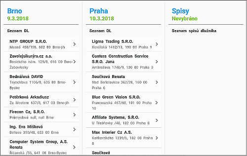
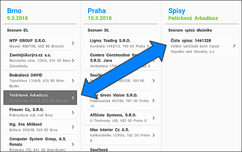
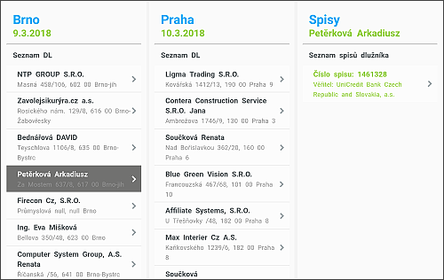

Výběr adresy dlužníka pro zápis
Na hlavní obrazovce jsou vypsány dvě nejbližší trasy. První je vždy ta s menším datumem.

Kliknutím na libovolnou adresu se vybere spis/spisy, které je třeba u dlužníka řešit. Spisy dlužníka se vždy vypisují v pravé části obrazovky.

V případě, že je na spis již v tabletu proveden zápis, je při výběru adresy název spisu obarven zeleně.
